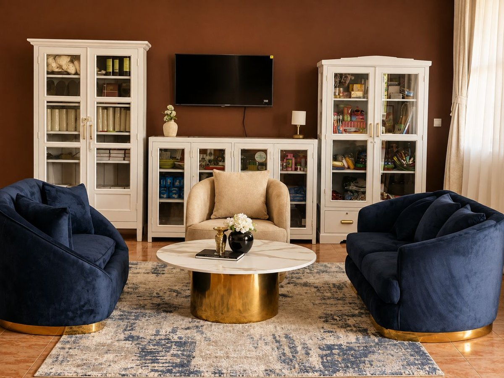
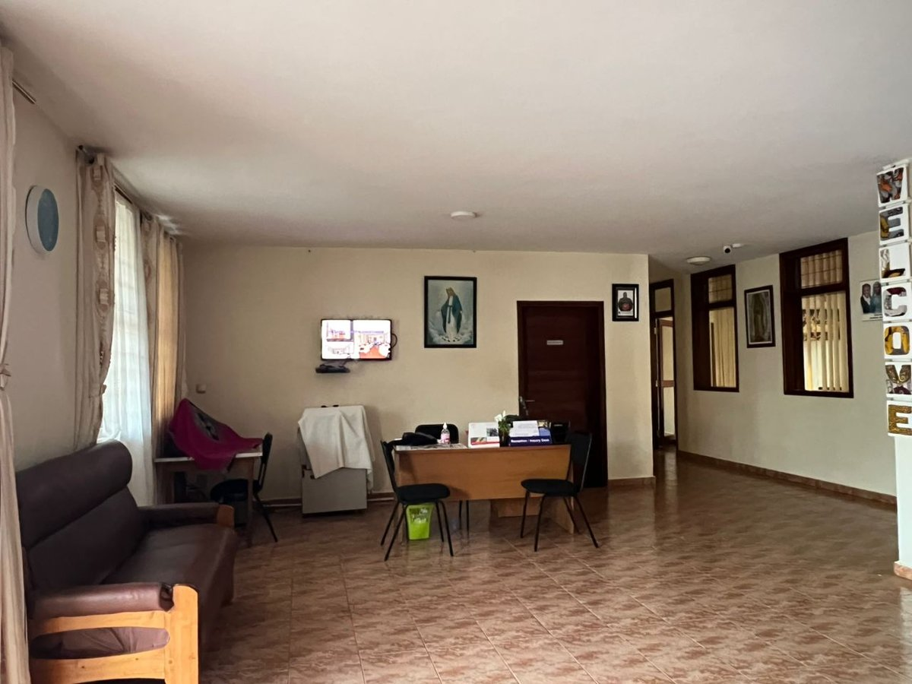
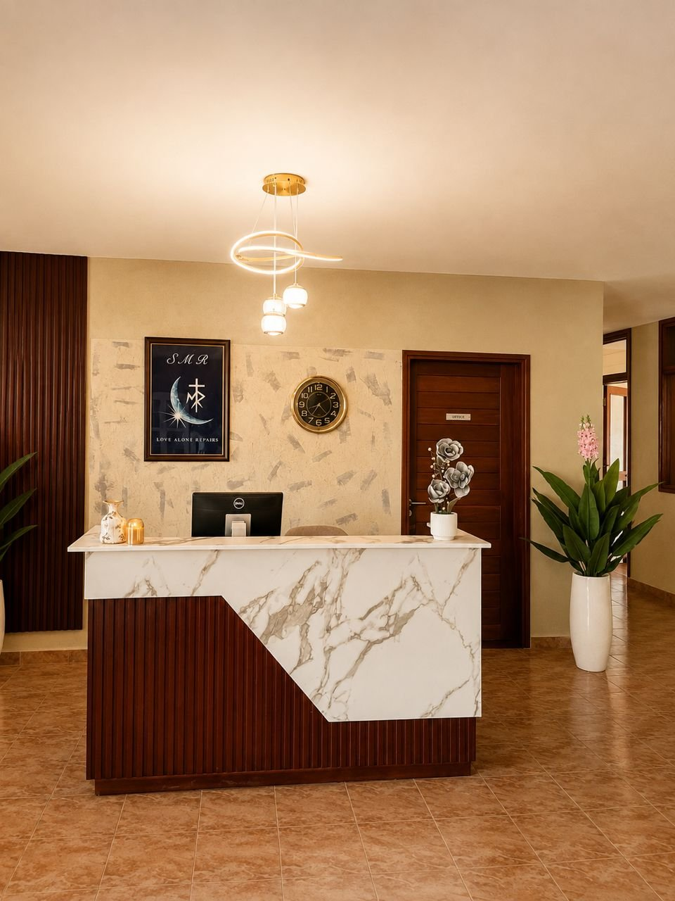
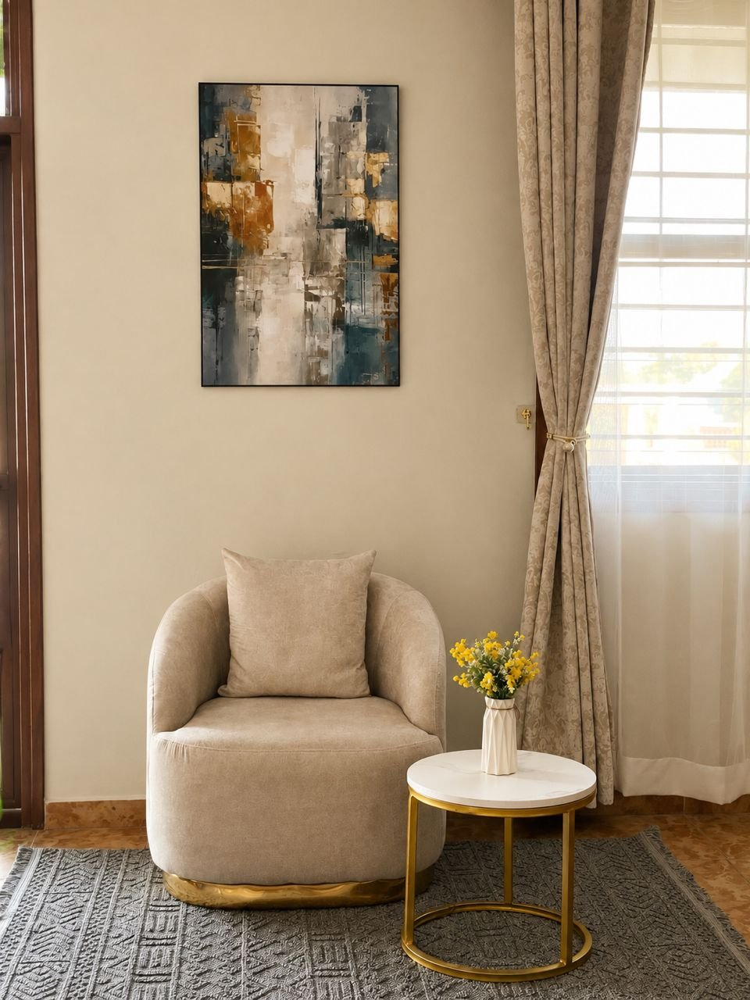

A tired waiting area became a warm, editorial-style lounge — new upholstery, a curated bookshelf styling, and a fresh accent wall.

A plain office desk against a bare wall became a marble-and-wood reception counter with ambient lighting and styled decor.


An overlooked corner became a styled seating nook — a swivel accent chair, a marble side table, and gallery-style wall art.
